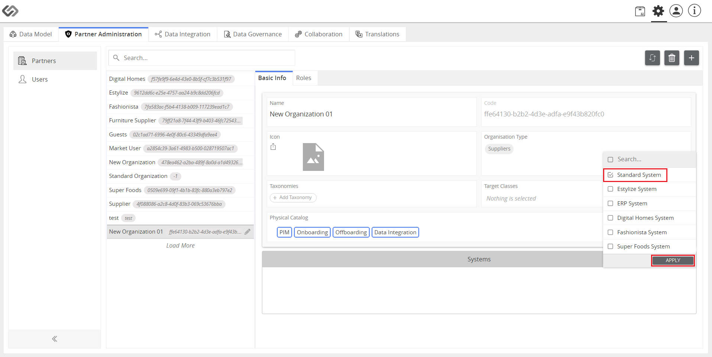
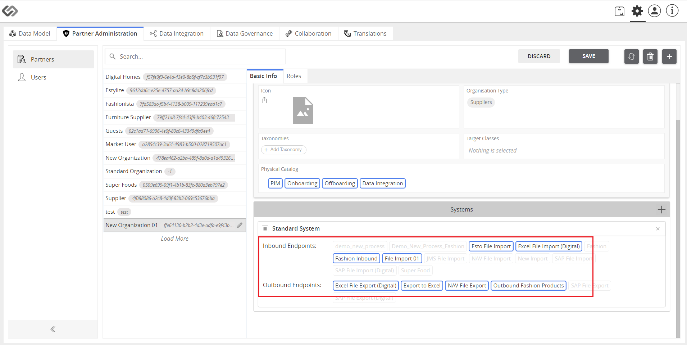

System Profile - Set up System Profile 1
The System Profile is an admin feature that manages the System on the platform so that systems can be used for data integration.
| Key Term: |
- Endpoint: is a gateway that describes the system, processes and mapping to be used when onboarding or offboarding the products to and from the system.
|
| Description: |
- An admin can create profiles for an organization that will contain its selected onboard and offboard endpoints.
- The profile created for the organization is called a System.
- These systems will be allotted to a particular organization and can be customized for the organization’s specific roles.
|
| Related topics: |
|
| Application: |
An organization can have multiple end-to-end systems like CRM, ERP, etc. These systems will have their own inbound and outbound endpoints.
All these systems (along with the endpoints) can be allotted to the organization and can be further customized for the roles of that particular organization.
By this, the admin can maintain the exclusivity of endpoints for specific roles within the organization.
Example:
The CRM-concerned roles within the organization can only access the CRM inbound and outbound endpoints.
Whereas, the ERP-concerned roles can only access the ERP endpoints.
|
How-to: Set up System Profile
To set up system profile, follow these steps:
- Log in and go to Administration.

- Click on the Partner Administration tab.
- Click on the “+” icon to create an organization (or select an existing one).
- Enter the name and click on the Create button.
- In the Systems section, click on the “+” icon to add systems to the organization.
- Select the system to be added and click on the Apply button.

- Select the endpoints to be used in the system.

- Click on the Save button.